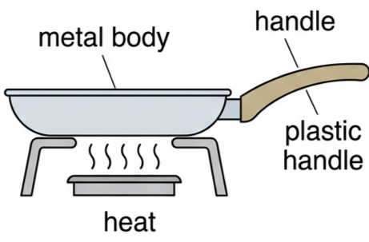
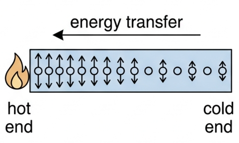
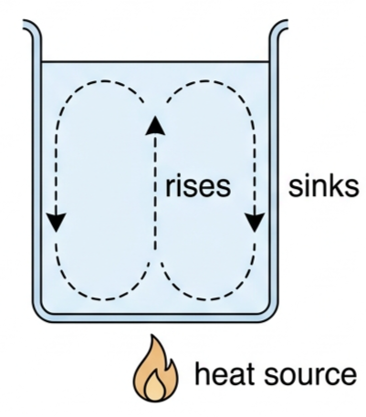
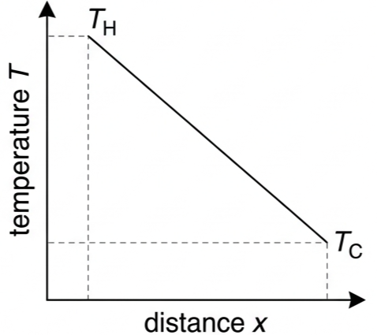
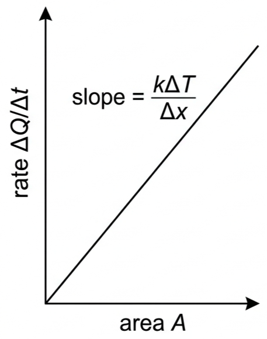

Part of B.1 Thermal Energy Transfers
· Unit B — IB Physics 2023
B.1 · Lesson 4
Conduction and Convection
How thermal energy moves through solids by particle collisions, and through fluids by bulk motion driven by density differences.
🍳 The frying pan mystery
You're cooking dinner. The metal frying pan has a plastic handle. After a few minutes on the stove, the pan is scorching hot, but the handle is still cool enough to hold comfortably. Both are at the same temperature — so why do they feel so different?

Metal body vs. plastic handle — same object, same temperature, very different rate of energy transfer
If pan and handle are at the same temperature, what does the difference in "feel" actually tell you about the two materials? Answer: it tells you about their thermal conductivity, not their temperature — the metal transfers heat to your hand far faster than the plastic does.
🔥 Conduction: energy passed particle to particle
Conduction is the transfer of kinetic energy between particles through collisions and interactions — energy always flows from hot to cold.

Particles near the heat source vibrate faster (higher KE); collisions pass that energy along the lattice toward the cold end
Particles at the heated end vibrate faster — greater kinetic energy
Faster particles collide with their neighbours
Kinetic energy passes from particle to particle
Energy flows from high KE (hot) to low KE (cold)
Common mistake: conduction does not only occur in solids — it happens in all states of matter. Solids conduct best (particles closest together), metals are excellent conductors (free electrons), gases are poor conductors (particles far apart).
Table B1.4 — thermal conductivities
Substance
k / W m⁻¹ K⁻¹
Vacuum
0.00
Air
0.025
Polyurethane foam
0.03
Rubber / wood
0.13 / 0.15
Water
0.59
Concrete and brick
0.72
Glass
0.86
Iron
84
Aluminium
237
Copper
385
Metals conduct 100–1000× better than insulators; a vacuum has no particles to carry energy at all.
📐 The conduction equation
Rate of thermal energy transfer$$\frac{\Delta Q}{\Delta t} = -kA\frac{\Delta T}{\Delta x}$$
\(\Delta Q/\Delta t\) = power (W) · \(k\) = thermal conductivity (W m⁻¹ K⁻¹) · \(A\) = cross-sectional area (m²) · \(\Delta T/\Delta x\) = temperature gradient (K m⁻¹). The negative sign shows energy flows from hot to cold.
Factor
Effect on heat flow
Relationship
Temperature difference ΔT
Larger ΔT → more flow
Direct
Area A
Larger A → more flow
Direct
Thickness Δx
Thicker → less flow
Inverse
Conductivity k
Higher k → more flow
Direct
🌊 Convection: the fluid itself moves
Convection is the transfer of thermal energy through a fluid (gas or liquid) due to the movement of the fluid itself, caused by density differences.

A convection current: heated water rises, spreads at the surface, cools, and sinks at the sides
Fluid is heated → particles gain kinetic energy
Fluid expands → same mass occupies a larger volume
Density decreases (\(\rho = m/V\), V↑ → ρ↓)
Buoyancy lifts the less dense fluid — it rises
Cooler, denser fluid sinks to replace it
A convection current forms — a cyclic flow that transfers energy
📊 Reading conduction and convection graphs
Graph type
Axes (X, Y)
Shape
What to read
Temperature through a slab
distance x, temperature T
straight line, decreasing
gradient magnitude = ΔT/Δx
Heat transfer rate vs area
area A, rate ΔQ/Δt
straight line through origin
gradient = kΔT/Δx
Heat transfer rate vs 1/thickness
1/Δx, rate ΔQ/Δt
straight line through origin
gradient = kAΔT
Density vs temperature (fluid)
temperature T, density ρ
decreasing curve
density fall drives buoyant rise

Steady-state temperature profile through a conducting slab

Rate of heat transfer scales directly with area, at fixed ΔT and Δx
🧮 Worked example — house wall vs window
Outside wall 4.85 m × 2.88 m, with a glass window 1.67 m × 1.23 m set into it. Outside 34°C, inside 27°C. Wall: brick, thickness 25 cm, k = 0.72. Window: glass, thickness 4.5 mm, k = 0.86.
IdentifyTwo parallel heat-loss paths through the same wall: brick (large area, thick) and glass (small area, very thin). ΔT = 34 − 27 = 7.0°C for both.
DataWall area = (4.85×2.88) − (1.67×1.23) = 13.97 − 2.05 = 11.92 m². Window area = 1.67×1.23 = 2.05 m².
The general conduction geometry: area A, thickness Δx, hot side T_H to cold side T_C
The window is only ~17% of the wall's area but conducts ~11× more heat — because it's so much thinner (4.5 mm vs 250 mm). This is why exam questions on insulation almost always compare thickness, not just material.
Note: these values overestimate real heat flow — surface temperatures aren't equal to the air temperatures either side (thermal boundary layers exist at each face).
🏠 Real-world insulation and convection
Cavity wall insulation: foam traps air pockets between two brick layers, cutting both conduction and convection
Foam works because air is a poor conductor (k = 0.025) and the foam stops convection currents forming in that trapped air. Double glazing uses the same idea: a small trapped air gap between two glass panes, too narrow for convection currents, also cuts sound transmission.
Application
Convection mechanism
Room heaters
Placed near floor — hot air rises to warm the room
Air conditioners / fridges
Placed near ceiling/top — cool air sinks
Oceans / atmosphere
Surface heating drives currents and weather
Earth's core, stars
Convecting molten rock / plasma transports energy
Exam favourite: a sea breeze forms because land heats faster than sea (lower specific heat capacity) — air over land rises, and cooler, denser sea air flows in to replace it, giving a breeze from sea to land.
🎓 HL extension — why the model overestimates
The conduction equation assumes the wall's surface temperatures equal the room and outside air temperatures. In reality a thin, poorly-mixed boundary layer of air clings to each surface, so the true ΔT across the wall itself is smaller than 7.0°C.
Challenge: if boundary layers mean the wall's outer surface sits at only 30°C (inner surface still 27°C), recalculate the wall's heat flow.
Answer: ΔT = 3.0°C, so ΔQ/Δt = 0.72×11.92×3.0/0.25 ≈ 103 W — less than half the 240 W estimate that assumed air temperatures acted directly on the wall surface.
⚠️ Trap corner – common mistakes
Misconception
Correct view
Conduction only happens in solids
Occurs in all states of matter; solids and metals are simply the best conductors
Air is a good conductor
Air is a poor conductor (k = 0.025) — that's exactly why trapped air insulates
Convection is conduction happening in a fluid
Different mechanisms entirely: conduction is particle-to-particle collision; convection is bulk fluid movement
Insulation works because it's "warm"
Insulation works by trapping air, a poor conductor — it has no inherent warmth
A metal door handle is not colder than a plastic one at the same temperature — it just conducts heat away from your hand faster, so it feels colder. Same temperature, different sensation.
Conduction = particle collisionsΔQ/Δt = −kAΔT/ΔxMetals conduct best; gases worstConvection needs a fluidDensity fall → buoyant riseTrapped air insulatesTemperature inversion blocks convection
Practice check — multiple choice
1. Which best describes thermal conduction at the particle level?
A Fluid movement caused by density differences
B Kinetic energy transferred between particles by collision
C Emission of electromagnetic waves
D A process that only occurs in metals
2. A material has thermal conductivity k = 0.025 W m⁻¹ K⁻¹. It is best described as:
A An excellent conductor
B Similar to copper
C A good insulator, like air
D A poor insulator
3. A metal door handle feels colder than a plastic one at the same temperature because:
A The metal is actually at a lower temperature
B The metal conducts heat away from your hand faster
C Plastic radiates more thermal energy
D Metal has a higher specific heat capacity
4. In ΔQ/Δt = −kAΔT/Δx, doubling the thickness Δx (all else constant):
A Doubles the rate of heat transfer
B Halves the rate of heat transfer
C Has no effect
D Quadruples the rate of heat transfer
5. Why does hot water at the bottom of a tube rise?
A Hot water is denser, so it sinks below cold water
B Hot water expands, becomes less dense, and is buoyed upward
C Hot water conducts heat upward instantly
D Gravity pulls warmer fluid upward
6. During a temperature inversion:
A Warm ground air rises freely, dispersing pollutants
B A warm air layer sits above cooler ground air, trapping pollutants near the surface
C Convection currents intensify near the ground
D Air pressure has no effect on pollutant dispersal
Practice check — fill in the blanks
Conduction transfers energy through particle . In fluids, transfers energy by bulk movement of the fluid itself. Density equals mass divided by . When a fluid's density falls, it experiences an upward force. Air trapped inside insulation is a poor . A temperature traps cooler air (and pollutants) near the ground.
Exam‑style questions
Exam question · Explain
Q19. A metal door handle and a plastic door handle are at the same temperature, but the metal one feels colder. Explain why. [2 marks]
✓ Metal has a much higher thermal conductivity than plastic. ✓ It conducts thermal energy away from your hand faster, so more energy leaves your skin per second — this is perceived as "colder", even though both handles are at the same temperature.
Exam question · Explain
Q21. Frying pans typically have a metal body and a plastic or wood handle. Explain this choice of materials. [2 marks]
✓ The metal body has high thermal conductivity, so it heats evenly and transfers energy quickly to the food. ✓ The handle needs low thermal conductivity so it stays cool enough to hold safely, despite being at a similar temperature to the pan.
Exam question · Explain
Q23. Explain how a neoprene wetsuit keeps a surfer warm in cold water. [3 marks]
✓ Neoprene foam contains trapped air bubbles, and air is a poor thermal conductor. ✓ The trapped air also prevents convection currents from carrying energy away. ✓ A thin layer of water trapped against the skin warms up and then insulates, further reducing heat loss to the surrounding cold water.
Exam question · Determine
Q24. A wooden disc of area 65 cm² and thickness 5.2 mm has a temperature difference of 100°C across it. The rate of thermal energy transfer through it is 16 W. Determine the thermal conductivity of the disc, and suggest what material it could be. [3 marks]
Q25. 275 J of thermal energy passes through a block of cross-sectional area 12.5 cm² in 10 minutes, with a temperature gradient of 4.2°C cm⁻¹. (a) Calculate the thermal conductivity. (b) Describe this material. (c) Suggest what it could be. [4 marks]
✓ Power = 275/600 = 0.458 W; gradient = 420°C m⁻¹. ✓ \(k = \dfrac{0.458}{1.25\times10^{-3}\times420} = 0.872 \approx 0.87\ \text{W m}^{-1}\text{K}^{-1}\). ✓ This is a poor conductor — an insulator. ✓ Consistent with glass (k = 0.86).
Exam question · Determine
Q26. Polyurethane foam insulation transfers 5.6 W per m² through a thickness of 7.8 cm. Calculate the temperature difference across the foam. [3 marks]
✓ Per unit area, \(5.6 = 0.03\times1\times\Delta T/0.078\). ✓ \(\Delta T = 5.6\times0.078/0.03\). ✓ \(\Delta T = 14.56 \approx 14.6°\text{C}\).
Exam question · Explain
Q27. A box with two chimneys has a candle beneath one chimney. Smoke rises through the heated chimney and falls through the other. Explain this observation. [2 marks]
✓ Air above the candle warms, expands and becomes less dense, so it rises up that chimney. ✓ Cooler, denser air sinks down the other chimney to replace it, forming a continuous convection current while the candle burns.
Exam question · Explain
Q28. A tube of water has ice held at the bottom by a gauze. (a) With heating applied near the top, explain why the ice does not melt. (b) If the gauze is removed and heating is applied at the bottom instead, explain why the ice does melt. [4 marks]
✓ (a) Water heated at the top expands and becomes less dense than the water below, so it stays at the top — no convection current can form, and water is a poor conductor, so heat is not carried down to the ice. ✓ (b) Water heated at the bottom expands, becomes less dense, and rises; colder, denser water sinks to replace it, forming a convection current. ✓ This current carries thermal energy up to the ice, which melts. ✓ Overall: water transfers thermal energy primarily by convection, not conduction.
Exam question · Explain
Q29. Explain why a sea breeze blows from the sea toward the land during the day. [3 marks]
✓ Land has a lower specific heat capacity than the sea, so it heats up faster in sunlight. ✓ Air above the land warms, expands, becomes less dense, and rises. ✓ Cooler, denser air from over the sea flows in to replace it, producing a breeze from sea to land.
Exam question · Outline
Q30. Outline features of an Antarctic explorer's clothing that reduce thermal energy loss. [4 marks]
✓ Multiple layers trap air between them (insulation). ✓ Insulating materials — wool, down or synthetic fibres — trap further air. ✓ A windproof outer layer prevents convective heat loss (wind chill), and a hood/face covering reduces loss from the head. ✓ Insulated gloves/boots reduce conduction to the cold ground; reflective materials reduce radiative loss.
Exam question · Identify
Q31. A pizza cooks in a wood-fired oven. Identify the three mechanisms of thermal energy transfer at work, and how each contributes. [3 marks]
✓ Conduction: thermal energy passes from the hot stone floor into the pizza base. ✓ Convection: hot air circulates around the pizza, cooking the top. ✓ Radiation: infrared radiation from the flames and oven walls also cooks the exposed surface.